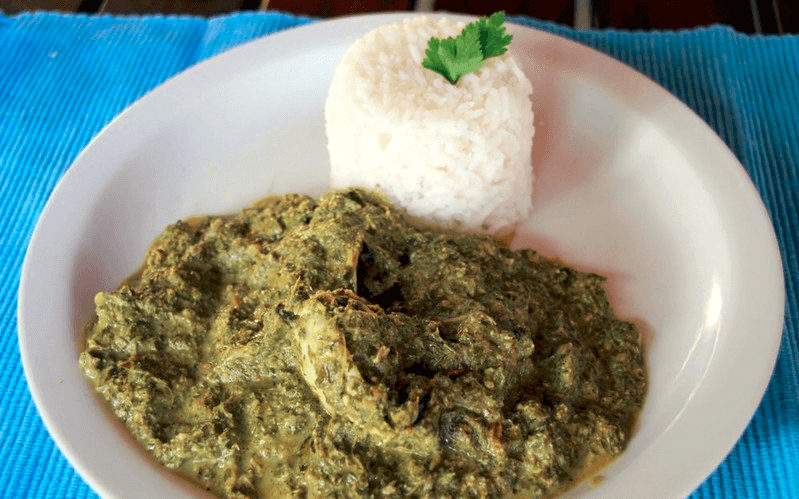

Matapa with Crab

Description
Matapá is a typical Mozambique dish, much appreciated for its combination of rich and authentic flavors. It is prepared with crushed and cooked cassava leaves, usually mixed with peanuts or grated coconut to create a creamy and tasty sauce. Traditionally, matapa is served with white rice and may include additional ingredients such as seafood (shrimp or crab), depending on the region and occasion. This dish reflects the fusion of Mozambican cultural heritage and its local ingredients, being a true expression of the country's cuisine.
Ingredients
- 250 g of cassava leaves
- 500 g of peanuts
- 1 large coconut
- 1 kg of cleaned and cooked crab
- 5 cloves of garlic
- 3 piripiris (For those who like it)
- 4 tomatoes cut into pieces
- 1 small onion cut into pieces
- 1 teaspoon of salt
- Juice of one lemon
Steps
- Wash the leaves and let them dry.
- Put garlic, chilli, salt and leaves in a mortar.
- Pile very well and put everything in a pan and let it boil for 30 minutes.
- While the matapa is boiling, add the peanuts, grate the coconut and remove the crab from the shells.
- After boiling for 30 minutes, add the crabs, tomato and onion.
- Then prepare the peanut and coconut milk.
- Pour this liquid into the matapa and let it boil for one or two hours.
- Watch Moz Music videos or play mathakusana while you wait.
- At the end, add the lemon juice, remove from the heat and serve while still hot.
- Eat with upswa or white rice.
- Enjoy
<--back to home